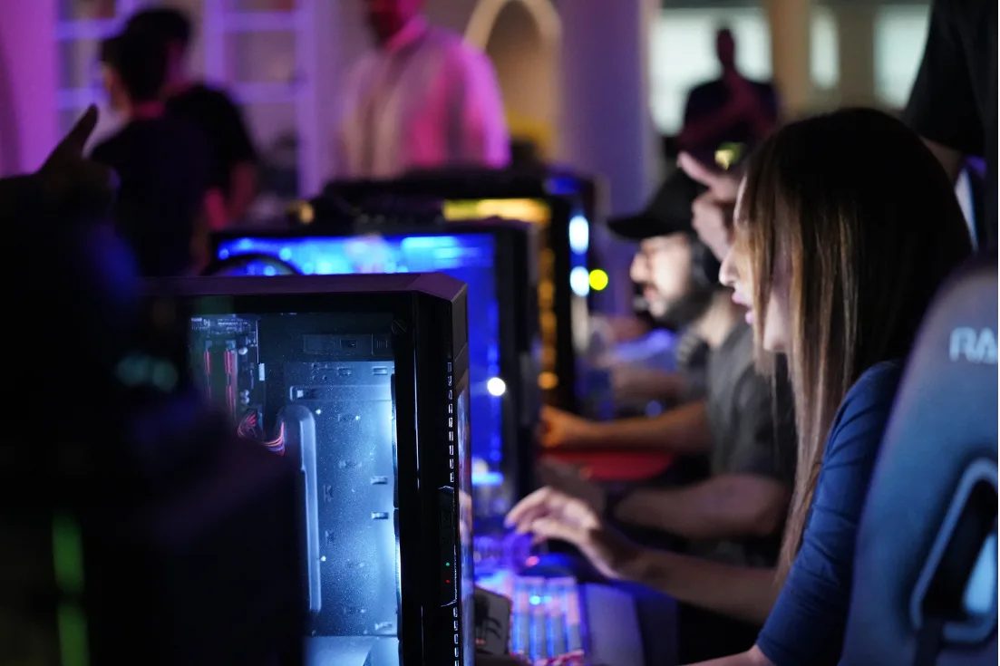
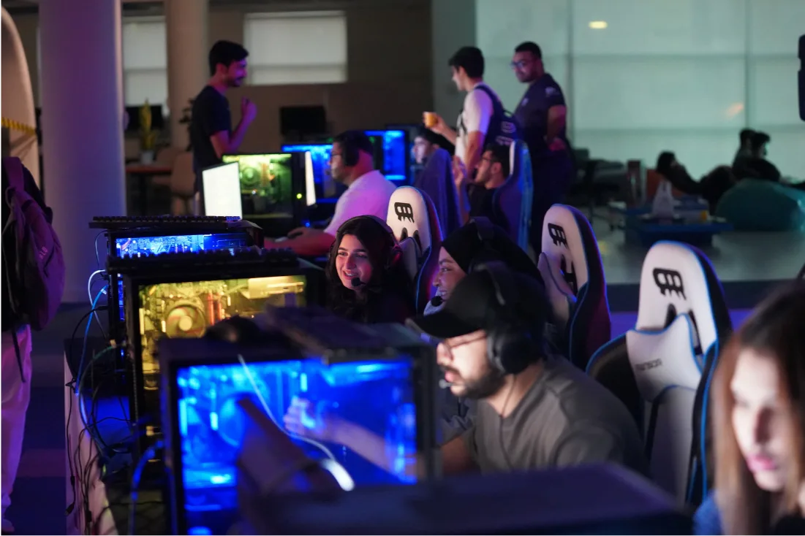
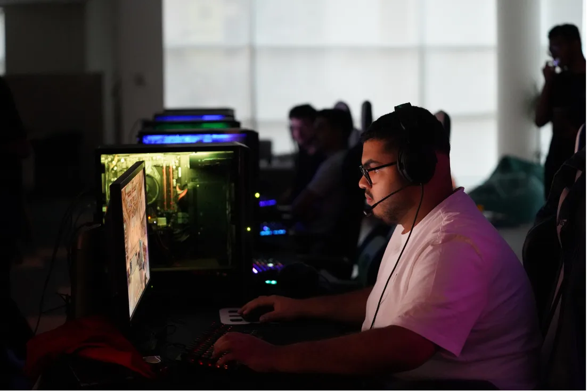
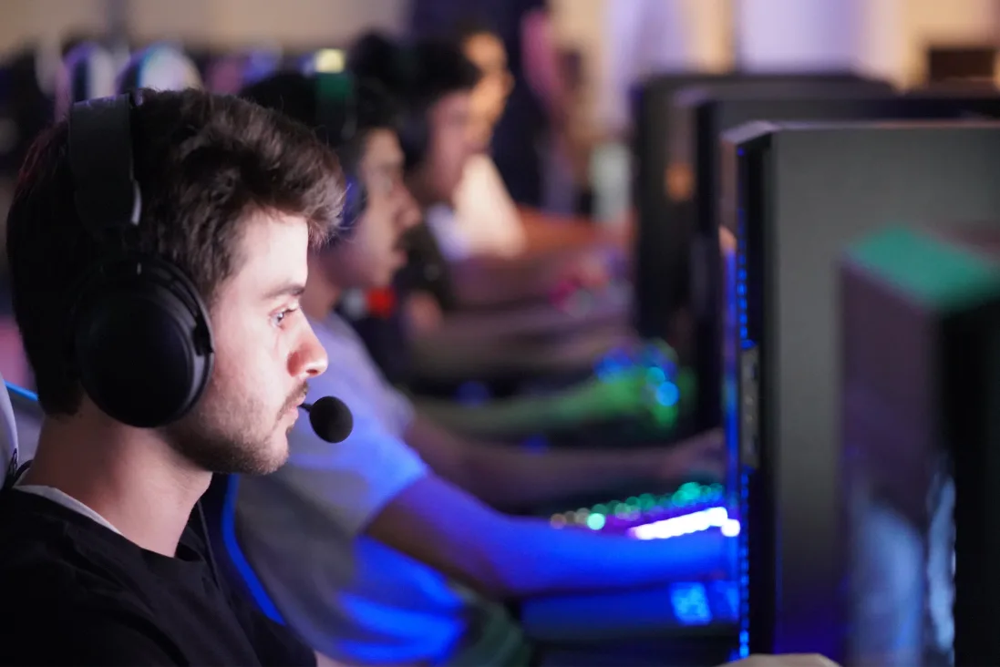
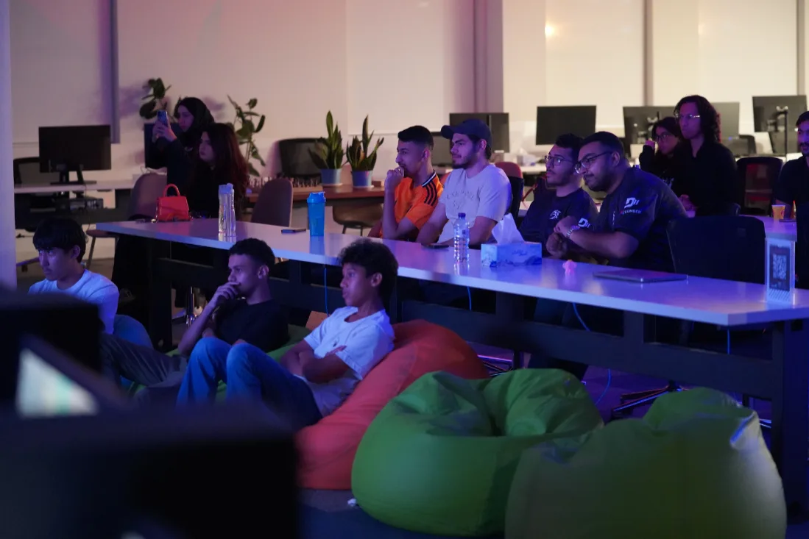
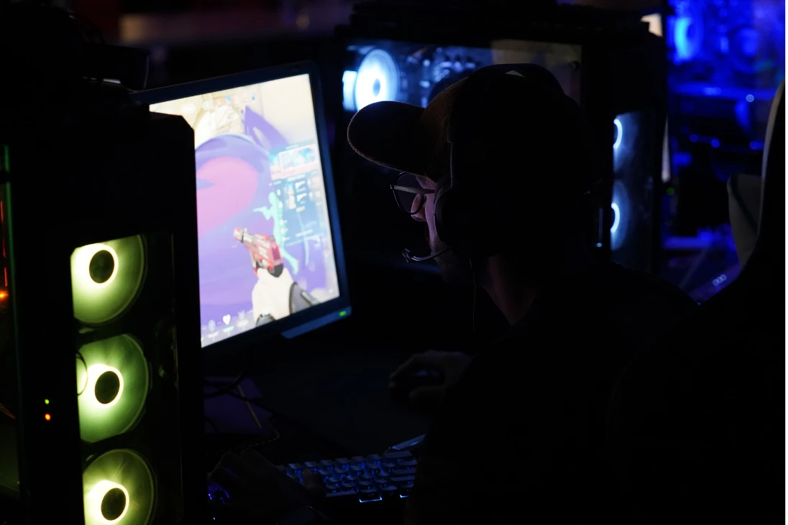

The Reboot Valorant Tournament brought together 16 of the best teams in Bahrain for a thrilling 5v5 competition. Hosted at the Reboot Coding Institute, the event featured professional production, live streaming, and a high-stakes bracket that kept both players and spectators on the edge of their seats.
Tournament Overview
This Valorant tournament was designed to provide a professional competitive environment for local talent. With a single elimination bracket and best-of-one matches, the event delivered fast-paced action and showcased the region's top FPS players.
The tournament was held as a hybrid event, with the first two days played online and the semifinals and final hosted on LAN at the Reboot Coding Institute. This approach allowed for broad participation and an exciting in-person conclusion for the top teams.
Bracket: Single Elimination
Teams: 16
Platform: Challonge for brackets, Twitch for streaming
Tournament Statistics
Event Highlights
The tournament featured intense FPS action, professional casting, and a vibrant live audience both on-site and online. Teams demonstrated exceptional skill, coordination, and sportsmanship throughout the event.
- 16 participating teams (80 Players)
- Professional production setup
- Live-streamed on Twitch
- Bracket hosted on Challonge
- Prize pool sponsored by local partners
BEC's Role & Responsibilities
BEC played a pivotal role in organizing and executing the tournament, handling everything from planning and logistics to live streaming and community engagement.
- Event planning & team coordination
- Match scheduling & bracket management
- On-site tech support & streaming
- Casting and spectator management
- Match hosting and refereeing
- Tournament bracket setup
- Venue setup and equipment management
- Social media content creation & result announcements
Event Gallery
Here are some of the best moments from the Reboot Valorant Tournament, featuring the excitement and energy of the event.






Impact & Future
The Reboot Valorant Tournament set a new standard for FPS events in Bahrain, inspired more players to compete, and raised the bar for future tournaments. The event's success highlighted the growing popularity of Valorant and the strength of the local esports community.